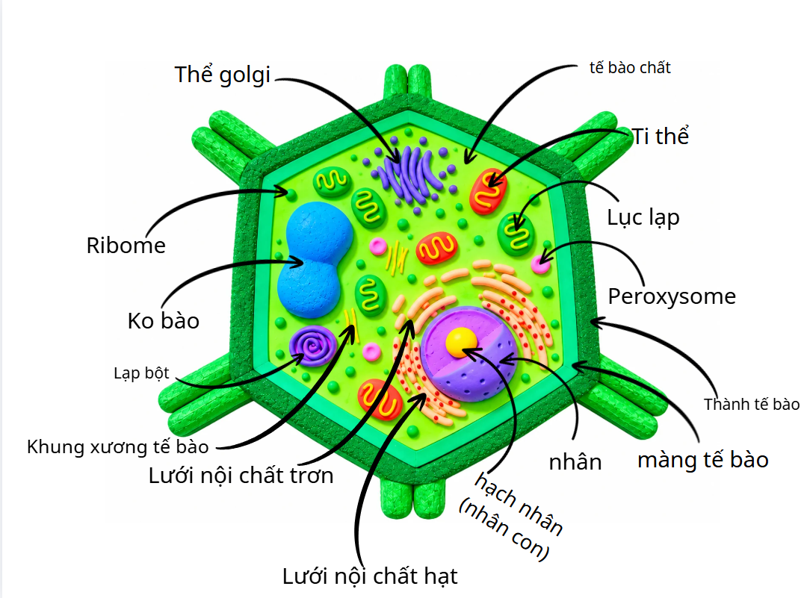
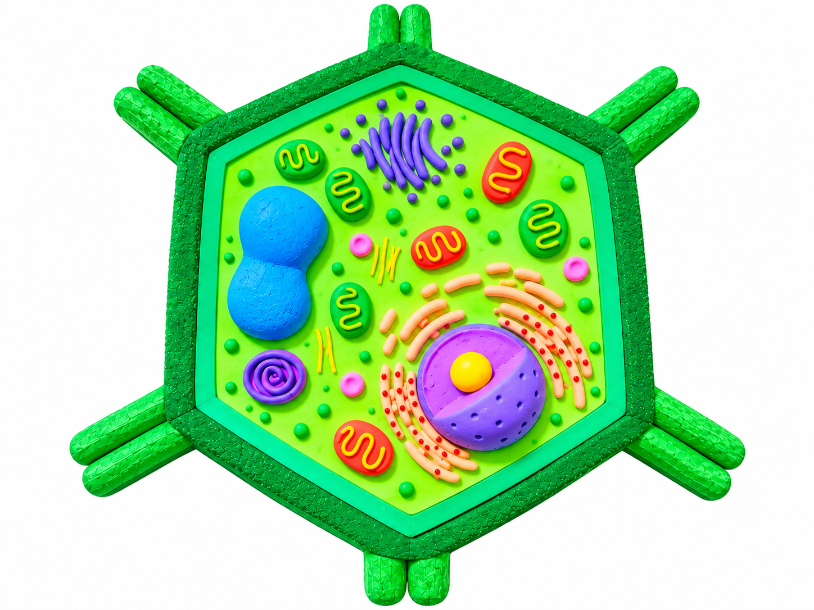

Hình tham chiếu từ nhóm học tập

LỚP 10/1 · THPT HOÀNG DIỆU
Quan sát mô hình minh họa, chọn tên từng thành phần và khám phá cách chúng phối hợp để duy trì sự sống của tế bào thực vật.

Trả lời các câu hỏi về cấu trúc, chức năng và sự phối hợp giữa các bào quan.

Thu phóng: dùng nút +/−, lăn chuột hoặc chụm hai ngón trên màn hình cảm ứng; kéo hình để di chuyển.
Chọn thành phần: số tại đầu mũi tên khớp với số thứ tự trong danh sách; chọn số hoặc tên để mở hồ sơ.
Hiện hoặc ẩn số: dùng nút ở góc trên của hình. Hình minh họa không thể hiện đúng tỉ lệ kích thước và số lượng bào quan trong tế bào thật.